Обзор и принцип работы основных алгоритмов сортировки и поиска
Здесь вы найдете подробные обьяснения и примеры работы
различных алгоритмов, помогающих упорядочить и находить
данные
Теория
Вводная часть:
Алгоритмы сортировки и поиска являются важными инструментами в компьютерной науке, используемыми для организации и поиска данных в массивах. Алгоритм сортировки упорядочивает элементы массива в определенном порядке (например, по возрастанию или убыванию), а алгоритм поиска находит конкретный элемент в отсортированном массиве.
Алгоритмы сортировки:
Существует множество различных алгоритмов сортировки с различными уровнями сложности и эффективности.
Некоторые распространенные алгоритмы сортировки включают:
- ✚ Пузырьковая сортировка: Неэффективный алгоритм, который многократно проходит по массиву, сравнивая попарно соседние элементы и меняя их местами, если они находятся в неправильном порядке.
- ✚ Сортировка выбором: Алгоритм, который ищет наименьший элемент в массиве и помещает его в начало. Затем процесс повторяется с оставшимся массивом до тех пор, пока весь массив не будет отсортирован.
- ✚ Сортировка вставками: Алгоритм, который работает путем постепенной сортировки массива. Берет каждый элемент массива и вставляет его на правильное место в уже отсортированном фрагменте массива.
- ✚ Сортировка слиянием: Эффективный алгоритм, который использует стратегию "разделяй и властвуй". Разделяет массив на меньшие массивы, сортирует их и затем сливает в один отсортированный массив.
- ✚ Быстрая сортировка: Еще один эффективный алгоритм, который также использует стратегию "разделяй и властвуй". Выбирает опорный элемент, разделяет массив на элементы меньше и больше опорного, и рекурсивно сортирует обе части.

Пузырьковая сортировка
Представим, что у нас есть массив целых чисел:
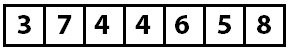
Во время первого прохода по массиву сравниваются значения 3 и 7. Так как семь больше, всё остаётся в первоначальном виде.
Далее сравниваются 7 и 4. Т. к. четыре меньше, цифры меняются местами:
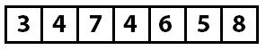
В общем, процесс повторяется, пока 7 не дойдёт практически до конца.
Почему практически? Потому что, как вы уже наверняка догадались, последний элемент — это 8, который больше семи, поэтому обмен не происходит. Всё чрезвычайно просто:
Однако пока обмен происходит, сортировка продолжается, в результате чего перемещается 6:
При очередном проходе обмен не выполняется, т. к. все значения массива расположены по порядку. В итоге алгоритм сортировки пузырьком заканчивает свою работу
Сортировка данных выбором
Сортировка выбором — некий гибрид между сортировкой вставками и пузырьковой сортировкой. Давайте посмотрим, как работает эта сортировка на нашем массиве:
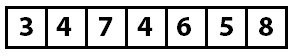
Во время первого же прохода алгоритм посредством метода FindIndexOfSmallestFromIndex пробует найти самое меньшее значение для перемещения его в начало массива.
Так как в нашем примере массив небольшой, мы легко скажем, что это «три», да и вообще, эта цифра уже находится там, где надо. После второго прохода мы получим следующее:
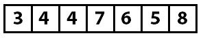
И ещё после 2-х проходов алгоритм сортировки завершит работу:
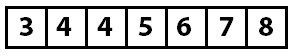
Сортировка вставками
Эта сортировка работает путём прохождения по массиву и перемещения нужного значения в его начало.
Важно помнить, что сортировка обрабатывает элементы массива по порядку. Т. к. алгоритм работает слева направо, становится очевидно, что всё, что находится слева от текущего индекса, — отсортировано.
Давайте посмотрим на увеличение отсортированной части массива с каждым последующим проходом:
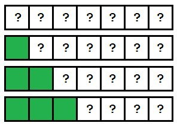
По ходу работы отсортированная часть массива растёт, таким образом, в конечном итоге, массив становится упорядоченным.
Приведём пример. Вот неотсортированный массив:
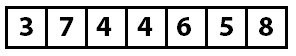
Алгоритм сортировки начнёт работать с индекса «ноль» и значения «три». Т. к. это 1-й индекс, массив до него включительно будет считаться уже отсортированным.
Потом перейдём к семёрке. Семь больше любого значения в отсортированной части, значит, осуществляется переход к последующему элементу.
Отметим, что на прошедшем этапе были отсортированы компоненты с индексами 0..1, про компоненты с индексами 2..n мы пока ничего не знаем.
Теперь алгоритм проверяет четвёрку. Четыре меньше, чем 7, поэтому переносится на другую, более правильную позицию,
которая находится в отсортированной части массива. Позиция определяется методом FindInsertionIndex.
Метод сравнивает переданное значение (в нашем случае это 4)
с каждым значением из отсортированной части и так до тех пор, пока не будет найдено место для вставки.
Так для вставки был определён индекс 1. Вставка осуществляется методом Insert.
Вставляемое значение удаляется из массива,
все остальные цифры сдвигаются вправо, начиная с индекса для вставки. Вот как стал выглядеть массив после сортировки:
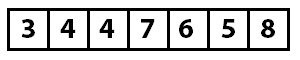
Итог работы алгоритма сортировки вставками очевиден:
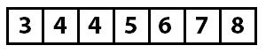
Сортировка данных слиянием
Предыдущее алгоритмы — линейные (имея квадратичную сложность, они используют мало памяти).
Сортировка слиянием соответствует принципу «Divide and conquer» («разделяй и властвуй»). Она работает путём разделения крупной задачи на более мелкие, которые решаются проще.
Представьте, что вы работаете на крыше или стройплощадке, и у вас повредился электрокабель, от которого запитывается важный инструмент. Строительные и кровельные кабели очень длинные и часто достигают 100 и более метров.
Вам нужно срочно окончить работу, но у вас нет средств диагностики, чтобы починить провод.
Неопытные работники просто прекращают все действия, доложив начальству. Мастера-сдельщики режут кабель пополам, получая в 99 % случаев 50 метров работающего провода. Если нужно, они режут пополам и неработающую часть, что позволяет либо достаточно быстро найти место внешнего повреждения,
внимательно изучив четверть кабеля (25 м), либо получить в итоге 75 метров, которых хватит для выполнения большинства строительных задач. Всё, что потребуется, — нож и моток изоленты.
Пример достаточно отдалённый, но всё же помогает понять, что такое сортировка слиянием. При выполнении этого алгоритма массив делится пополам до тех пор, пока каждый участок не будет иметь длину в один элемент.
Далее участки сливаются (возвращаются на место), но уже в правильном порядке.
Итак, наш массив:
Он делится наполовину:
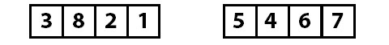
И потом опять, и опять наполовину:
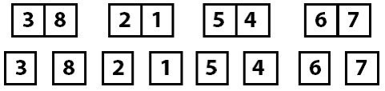
Потом сливание/соединение в верном порядке:
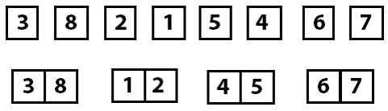
И результат:
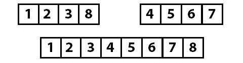
Алгоритм работает путём реализации следующих операций: 1. Рекурсивное разделение массива на группы с помощью метода Sort. 2. Слияние в верном порядке через метод Merge.
Сортировка слиянием делит и склеивает массив вне зависимости от того, был ли он изначально отсортирован либо нет.
Это значит, что данный алгоритм — не самое оптимальное решение, если наш массив уже частично упорядочен и отсортирован (производительность сортировки слиянием может быть ниже, чем у линейного алгоритма).
Тест
Нажмите на гиперссылку сверху, чтобы проверить свои знания